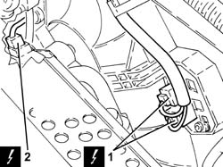
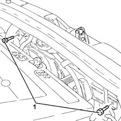
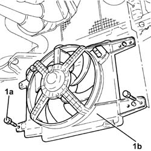
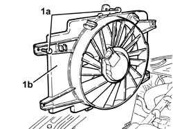
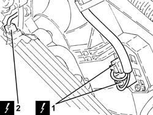
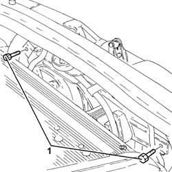

1088E10 RADIATOR COOLING FAN - R + R
- Path
- Procedures > 10 ENGINE UNIT > 1088 ENGINE COOLING > 1088E COOLANT TEMPERATURE CONTROL DEVICES > 1088E10 RADIATOR COOLING FAN - R + R
- Kind
- repair procedure (removal / refitting; the operation number is the code)
- Applies to
- engines: 1.8 T.SPARK, 2.0 JTS, 1.9 JTD 16V; all production periods
- Interactive page
- https://sloeber94.github.io/elrnDB-aGt/en/#/125001189
Applies to: engines: 2.0 JTS; all production periods
 Removing
Removing
 Refitting
RefittingPosition the vehicle on a lift.
Make sure that the ignition key is in the OFF position, then disconnect the negative battery terminal (-).
Description | Connector | |
|---|---|---|
- | Battery | See A1B BATTERY ( BATTERY NEGATIVE ) |
1. Disconnect the electrical connections from the engine cooling fan resistor.
Description | Connector | |
|---|---|---|
1 | Engine fan adjustment resistance | See O10 ENGINE FAN ADJUSTMENT RESISTOR - 1 |
2. Disconnect the electrical connection from the engine cooling fan motor and release the wiring from the collar.
Description | Connector | |
|---|---|---|
2 | Engine fan motor | See N11 ENGINE FAN MOTOR - 1 |

Applies to: engines: 2.0 JTS; all production periods
1. Undo the upper retaining bolts for the radiator cooling fan.

Applies to: engines: 2.0 JTS; all production periods
Proceed with the removal
Op. 7055B54 UNDER-ENGINE GUARD - R R.
1. Undo the lower bolts (1a) and remove the radiator fan (1b).

Applies to: engines: 2.0 JTS; all production periods
Refitting
RemovingRefit the radiator cooling fan and secure with lower bolts.
Proceed with the refitting
Op. 7055B54 UNDER-ENGINE GUARD - R R.
Undo the upper retaining bolts for the radiator cooling fan.
Connect the electrical connection to the radiator cooling fan motor and secure the wiring to the collar.
Connect the electrical connections to the engine cooling fan resistor.
Connect the negative battery terminal (-).
Remove the vehicle from the lift.
Applies to: engines: 1.9 JTD 16V; all production periods
Removing
RefittingPosition the vehicle on a lift.
Proceed with removal - 1016A10 SOUNDPROOFING COVER - R&R
.
Proceed with the removal
Op. 7055B54 UNDER-ENGINE GUARD - R R.
Proceed with the removal
Proceed with the removal
Op. 5530B52 BATTERY DRIP TRAY/SUPPORT - R.R..
Proceed with the removal
Op. 1048A10 AIR CLEANER FILTERING ELEMENT - REPLACE.
1. Undo the bolts (1a) and remove the radiator cooling fan (1b).

Applies to: engines: 1.9 JTD 16V; all production periods
Refitting
RemovingRefit the radiator cooling fan in its seat and secure with bolts.
Proceed with the refitting
Op. 1048A10 AIR CLEANER FILTERING ELEMENT - REPLACE.
Proceed with the refitting
Op. 5530B52 BATTERY DRIP TRAY/SUPPORT - R.R..
Proceed with the refitting
Proceed with the refitting
Op. 7055B54 UNDER-ENGINE GUARD - R R.
Refill the engine cooling system
Op. 0010T20 COOLANT CHECK DENSITY AND TOP UP IF NECESSARY.
Proceed with refitting - 1016A10 SOUNDPROOFING COVER - R&R
.
Remove the vehicle from the lift.
Applies to: engines: 1.8 T.SPARK; all production periods
Removing
Refitting- Position the vehicle on a lift.
- Make sure that the ignition key is in the OFF position, then disconnect the battery terminal (-).
Description | Connector | |
|---|---|---|
- | Battery | See A001 Battery |
1. Disconnect the electrical connections from the engine cooling fan resistor.
Description | Connector | |
|---|---|---|
1 | Engine fan adjustment resistance | See O10 ENGINE FAN ADJUSTMENT RESISTOR - 1 |
2. Disconnect the electrical connection from the engine cooling fan motor and release the wiring from the collar.
Description | Connector | |
|---|---|---|
2 | Engine fan motor | See N11 ENGINE FAN MOTOR - 1 |

Applies to: engines: 1.8 T.SPARK; all production periods
- Undo the upper retaining bolts for the radiator cooling fan.

Applies to: engines: 1.8 T.SPARK; all production periods
- Undo the lower bolts (1a) and remove the radiator cooling fan (1b).
Applies to: engines: 1.8 T.SPARK; all production periods
Refitting
Removing- Refit the radiator cooling fan and secure with lower bolts.
- Undo the upper retaining bolts for the radiator cooling fan.
- Connect the electrical connection to the radiator cooling fan motor and secure the wiring to the collar.
- Connect the electrical connections to the engine cooling fan resistor.
- Connect the negative battery terminal (-).
- Remove the vehicle from the lift.
Topics linked from this page (5)
- 0010T20 COOLANT CHECK DENSITY AND TOP UP IF NECESSARY
- 1048A10 AIR CLEANER FILTERING ELEMENT - REPLACE
- 5530B10 BATTERY - R+R
- 5530B52 BATTERY DRIP TRAY/SUPPORT - R.R.
- 7055B54 UNDER-ENGINE GUARD - R R